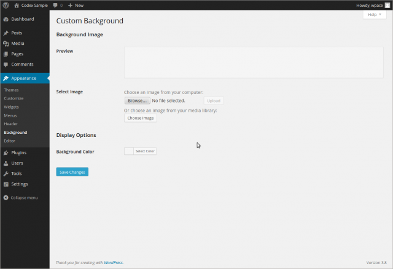

Languages:
English •
Hrvatski •
Background Screen 日本語
Português do Brasil •
中文(简体) •
(Add your language)
WordPress Version 4.1 or later
WordPress Version 4.1 removed this custom background screen and the link of Appearance - Background menu was directed to the Background Image section in the Customizer.
Please refer the Customize Screen for more detail information.
Appearance → Background
Prior to WordPress Version 4.1, in the Appearance Background Screen, if allowed by your current theme, you can customize the background of your theme by uploading an image or selecting a color to represent the background.

Back to Administration Screens.
Background Image
- Preview
- In this box, the uploaded image, or the selected color is available for previewing.
- Upload Image
- Choose an image from your computer. Click the browse button to find the image on your local computer, then once the image is selected, click the Upload button to upload the image. At that point the Display Options are exposed
Image Display Options
- Position
- Check appropriate Radio button to allow image to be positioned Left, Center, or Right
- Repeat
- Check Radio button to determine if image is repeated. Choices are Repeat, No Repeat, Tile, Tile Horizontally, or Tile Vertically.
- Attachment
- Radio button to Scroll background or display as Fixed.
- Remove Background Image
- Once an image is uploaded, if the image is no longer desired, use this button to remove the image.
Display Options
- Color
- Click the Select color button. You can either enter a hexadecimal number (e.g. d33131) representing the color to be displayed as the background of your theme, or from the color picker, click the desired color and the hexadecimal number for that color will be placed in the Color field, or click Default to restore the initial condition. A Preview of that color is presented near the top of this Screen.
Save Changes
- Click the Save Changes button to ensure any changes you have made to your Background settings are saved to your database. Once you click the button, a confirmation text box will appear at the top of the page telling you your settings have been saved.
Related
Changelog
- 3.0 : New Screen
- 4.1 : Custom background was removed. Appearance - Background menu item link directly to the Customizer.
{kind=link}